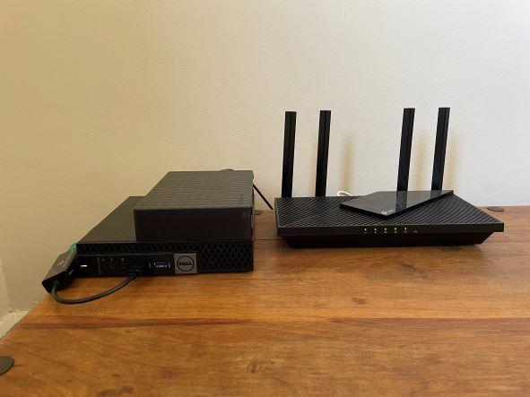

I grew up on a farm in rural NSW. At the start of 2022, I moved to Sydney to attend UTS.
In the HSC, I studied Information Processing Technology and Software Design and Development. My major projects were an inventory management system and an automatic YouTube downloader.
I currently work at a production company, setting up lights, sound, video, and effects for schools, music festivals and corporate events.
I have programmed for most of my life, trying out various languages to broaden my understanding.
I have most of my experience in:
I have ran a small home lab for the past 4 years to learn the processes of system administration, including docker, virtualisation and networking. This currently involves:
| Service | Description |
|---|---|
| Home Assistant | An all in one home automation hub |
| Jellyfin | A free and open source media server |
| Calibre | A digital library |
| OPNSense | A free firewall and router |
All of this is virtualised on my mini homelab, a small form factor PC running Proxmox.
